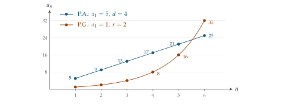

Sucesiones y progresiones
calcular los términos de una sucesión dada por su término general o por una recurrencia;
escribir el término general y la suma de los primeros términos de una progresión aritmética;
escribir el término general y la suma de los primeros términos de una progresión geométrica;
reconocer, a partir de los primeros términos, si una lista es aritmética, geométrica o ninguna de las dos.
Empieza la Unidad 3. Hasta aquí trabajaste con listas finitas de valores (las filas de una tabla de verdad). Ahora trabajas con listas que no terminan: el saldo de una deuda mes a mes, las butacas fila tras fila, los datos que se duplican cada día. Para todas ellas necesitas un lenguaje común.
8.1 Qué es una sucesión
Una sucesión es una lista ordenada de números Cada es un término, y el subíndice dice el lugar que ocupa. A la regla que da en función de se le llama término general.
Por ejemplo, la sucesión tiene término general : el término de lugar 5 es . Fíjate en la diferencia entre (un número) y el subíndice (una posición).
Una sucesión se puede dar de dos maneras, y las dos aparecen todo el tiempo.
Término general: una fórmula que depende solo de , como . Sustituyes y listo.
Recurrencia: una regla que obtiene a partir de los términos anteriores, más el primer término que arranca el proceso, como y .
Una recurrencia se lee como una cadena: cada término sale del anterior con la misma operación. En la cadena de arriba se suma siempre ; en la de abajo se multiplica siempre por . Más adelante verás que cada una tiene nombre propio.
Considera la lista (a) Escribe su recurrencia y su término general. (b) Calcula . (c) Halla los primeros cinco términos de la sucesión , .
Soluciónintenta primero
(a) Busca qué cambia de un término al siguiente.
, , : siempre se suma . La recurrencia es , . Para llegar de a se suma un total de veces, así que .
(b) Con el término general, saltas directo.
. Con la recurrencia habrías tenido que calcular los 19 términos anteriores.
(c) Con una recurrencia, no hay atajo: se va término a término.
, , , .
(a) , o bien y . (b) . (c)
La recurrencia es la forma natural de describir un proceso («cada mes se suma tal cantidad»); el término general es la forma cómoda de calcular. Las dos familias que siguen son las sucesiones donde pasar de una a otra es fácil, y por eso se estudian aparte.
8.2 Progresiones aritméticas
Una sucesión es una progresión aritmética (P.A.) si cada término se obtiene del anterior sumando siempre el mismo número , llamado diferencia: .
Las fórmulas que necesitas se enuncian y se usan; no hay que deducirlas.
Si es el primer término y la diferencia: El término general se cumple porque de a se dan pasos de tamaño . La suma es la de Gauss del capítulo 4: veces el promedio del primer y el último término. Si no conoces , calcúlalo primero con la fórmula de la izquierda.
Para ver la forma de una P.A., mira las butacas de las primeras filas: cada fila es la anterior con dos butacas más, así que la platea tiene forma de escalera.
La primera fila de un auditorio tiene 12 butacas y cada fila siguiente tiene 2 más que la anterior. Si hay 20 filas: (a) ¿cuántas butacas tiene la última fila? (b) ¿cuántas tiene el auditorio en total? (c) ¿en qué fila hay 34 butacas?
Soluciónintenta primero
Identifica la progresión.
Las butacas por fila son : es una P.A. con y .
(a) Última fila ().
.
(b) Total de butacas: la suma de las 20 filas.
(c) Aquí se conoce y se busca .
Plantea . Entonces , y .
(a) La última fila tiene butacas. (b) El auditorio tiene en total. (c) La fila tiene butacas.
Una P.A. puede también decrecer: basta que sea negativa. Eso es lo que pasa con los intereses de un crédito que se paga con abonos iguales.
Un crédito de $1 200 000 se paga en 12 meses con un abono a capital de $100 000 mensuales. Cada mes se cobra un interés del 2 % sobre el saldo que se debe al comenzar el mes. ¿Cuánto se paga de interés el último mes y cuánto en todo el crédito?
Soluciónintenta primero
Escribe los primeros intereses.
Mes 1: el saldo es $1 200 000 y el interés es . Después del abono el saldo baja $100 000, así que el interés baja cada mes. Los intereses son : una P.A. con y .
Interés del mes 12.
.
Intereses de todo el crédito.
El último mes se pagan $2 000 de interés, y en total $156 000.
8.3 Progresiones geométricas
Una sucesión es una progresión geométrica (P.G.) si cada término se obtiene del anterior multiplicando siempre por el mismo número , llamado razón: .
Si es el primer término y la razón: El término general se cumple porque de a se multiplica por un total de veces. La suma funciona porque al restar y casi todos los términos se cancelan. Si todos los términos son iguales y .
Con : si la P.G. crece y se dispara; si decrece acercándose a (los descuentos sucesivos); si los términos alternan de signo. En una P.A. el papel de lo juega : con crece, con decrece y con es constante.
Un servidor guarda 500 registros el primer día, y cada día guarda el doble que el día anterior. ¿Cuántos registros guarda el día 10 y cuántos lleva guardados en total al terminar el día 10?
Soluciónintenta primero
Identifica la progresión.
Los registros diarios son : una P.G. con y .
Día 10.
.
Total acumulado.
El día 10 guarda registros; en total lleva .
Observa que el total acumulado es casi el doble de lo guardado el último día. No es casualidad: en una P.G. de razón 2 el último término pesa más que todos los anteriores juntos.
8.4 Cómo reconocer cuál es
Cuando te dan los primeros términos de una lista, calcula dos cosas: las diferencias y los cocientes de términos consecutivos.
| Si… | entonces… |
|---|---|
| es siempre el mismo número | es una P.A. de diferencia |
| es siempre el mismo número | es una P.G. de razón |
| ninguna de las dos es constante | no es ni una ni otra |
Revisa todos los pares disponibles: uno solo que falle descarta la progresión.
La figura muestra por qué importa la distinción. Una P.A. suma la misma cantidad en cada paso, así que sus puntos quedan alineados. Una P.G. multiplica, así que cada paso es más largo que el anterior.

Decide si cada lista es una P.A., una P.G. o ninguna, y da y o :
(el precio, en miles de pesos, de un equipo al que se le rebaja el 10 % cada mes)
Para la lista (b), ¿cuál es el precio al cabo de 5 rebajas?
Soluciónintenta primero
(a) Mira las diferencias.
, , : P.A. con y .
(b) Las diferencias no son constantes; prueba con los cocientes.
y no coinciden. Pero , , : P.G. con y . Tiene sentido: rebajar el 10 % es quedarse con el 90 % del precio anterior.
(c) Prueba las dos pruebas.
Diferencias: . Cocientes: . Ninguna es constante.
Precio al cabo de 5 rebajas en (b).
Después de 5 rebajas el precio es el término : .
(a) P.A., , . (b) P.G., , ; tras 5 rebajas el equipo cuesta unos . (c) Ni P.A. ni P.G.
Que una lista no sea ni P.A. ni P.G. no significa que no tenga término general. Los cuadrados tienen diferencias y cocientes , ninguno constante, y sin embargo las describe perfectamente. Y hay recurrencias en las que cada término depende de dos anteriores, como la de Fibonacci, y , que produce Las progresiones son las dos familias más simples, no las únicas.
| Aritmética | Geométrica | |
|---|---|---|
| Se pasa de un término al siguiente | sumando | multiplicando por |
| Recurrencia | ||
| Término general | ||
| Suma de términos | ||
| Gráfica de los puntos | sobre una recta | sobre una curva que se dispara (si ) |
Usar donde va . Entre el término y el término hay saltos, no . Con y , el quinto término es , no . En una P.G. pasa lo mismo con el exponente: , no . Un truco para no fallar: sustituye y comprueba que te da .
Practica tú
(a) Escribe los primeros cinco términos y el término de la sucesión . (b) Escribe los primeros cinco términos de , .
Respuestaintenta primero
(a) ; . (b) .
Un teatro tiene 18 filas. La primera tiene 14 butacas y cada fila tiene 3 más que la anterior. ¿Cuántas butacas tiene la última fila y cuántas el teatro?
Respuestaintenta primero
butacas; .
Di si cada lista es una P.A., una P.G. o ninguna, y en los dos primeros casos calcula : (a) (b) (c)
Respuestaintenta primero
(a) P.G., : . (b) P.A., : . (c) Ninguna: diferencias , cocientes .
Un crédito de $3 000 000 se paga en 12 meses con abonos a capital de $250 000 mensuales y un interés del 1,5 % mensual sobre el saldo al comenzar el mes. ¿Cuánto se paga de interés el último mes y cuánto en todo el crédito?
Respuestaintenta primero
Los intereses forman una P.A. con y . Último mes: $3 750; total: $292 500.
Un archivo de registro pesa 5 MB el primer día y su tamaño se duplica cada día. (a) ¿Cuánto pesa el día 8 y cuánto suman los ocho primeros días? (b) ¿En qué día pesa por primera vez más de 1 000 MB?
Respuestaintenta primero
P.G. con , . (a) MB; MB. (b) exige : el día (1 280 MB).
En una P.G. se sabe que y . Halla , y . (Ayuda: escribe y con y divide una entre la otra.)
Respuestaintenta primero
, así que ; ; .
- aₙ = a₁ + n·d → aₙ = a₁ + (n − 1)·d
- suma geométrica infinita siempre existe → solo si |r| < 1
✦Practica activa
Retos para afianzar las ideas del capítulo: arma la demostración con los bloques en el orden correcto y caza el paso falso de un argumento.
← Volver a santiagoalzates.com